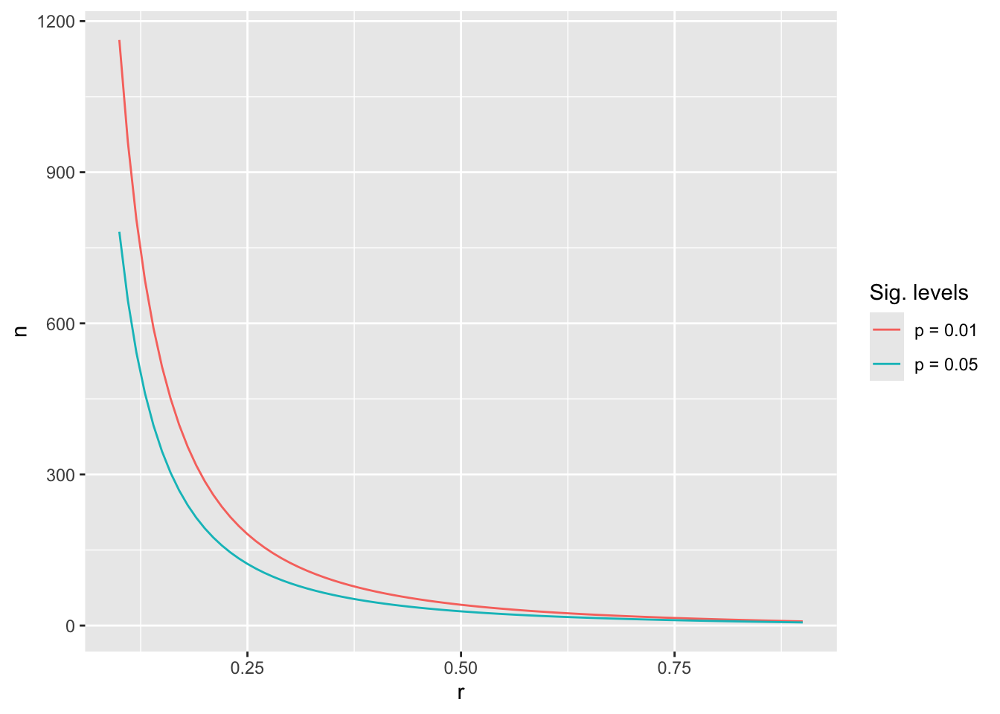

The most frequently asked question by my students is: How much data do I have to collect? My answer is always the same: It depends. From a student’s perspective, this must be one of the most frustrating answers. Usually, I follow this sentence up with something more helpful to guide students on their way. For example, there is a way to determine how large your sample has to be to detect specific relationships reliably. This procedure is called power analysis.
While power analysis can be performed before and after data collection, it seems rather pointless to do it afterwards when collecting more data is not only challenging but sometimes impossible. Thus, my explanations in this chapter will primarily focus on the question: How much data is enough to reliably detect relationships between variables?
Power analysis is something that applies to all kinds of tests, such as correlations (Chapter 10), group comparisons (Chapter 11) and regressions (Chapter 13). Therefore, it is important to know about it. There is nothing worse than presenting a model or result that is utterly underpowered, i.e. the sample is not large enough to detect the desired relationship between variables reliably. In anticipation of your question about whether your analysis can be overpowered, the answer is yes. Usually, there are no particular statistical concerns about having an overpowered analysis - more power to you (#pun-intended). However, collecting too much data can be an ethical concern. If we consider time as a scarce resource, we should not collect more data than we need. Participants’ time is valuable, and being economical during data collection is crucial. We do not have to bother more people with our research than necessary because not everyone is as excited about our study as we are. Besides, if everyone conducts studies on many people, effects such as survey fatigue can set in, making it more difficult for others to carry out their research. Thus, being mindful of the required sample size is always important - I mean: essential.
12.1 Ingredients to achieve the power you deserve
We already know that sample size matters, for example, to assume normality when there is none in your sample (see Central Limit Theorem in Section 9.4). Also, we should not mistakenly assume that a relationship exists where there is none and vice versa. I am referring to so-called Type I and Type II errors (see Table 12.1).
Table 12.1: Type I and Type II error defined
Error
Meaning
Type I
We assume a relationship exists between variables where there is none in the population.
We also refer to this as ‘false positive’.
While we find a significant relationship between variables in our sample, a larger sample would not find such a relationship.
Is represented by the Greek letter \(\alpha\) (alpha).
The acceptance level of this error is equivalent to the p-value, i.e. significance level.
Type II
We assume that there is no relationship between variables even though there is one in the population.
We also refer to this as ‘false negative’.
While our sample does not reveal a significant relationship between variables, a larger sample would show that the relationship is significant.
Is represented by the Greek letter \(\beta\) (beta).
Power analysis aims to help us avoid type II errors and, therefore, power is defined as the opposite of it, i.e. \(1 - \beta\), i.e. a true positive. To perform such a power analysis, we need at least three of the following four ingredients:
the power level we want to achieve, i.e. the probability that we find a true positive,
the expected effect size (\(r\)) we hope to find,
the significance level we set for our test, i.e. how strict we are about deciding when a relationship is significant, and
the sample size.
As I mentioned earlier, it makes more sense to use a power analysis to determine the sample size. However, in the unfortunate event that you forgot to do so, at least you can find out whether your results are underpowered by providing the sample size you obtained. If your study is underpowered, you are in serious trouble and in dire need of more participants.
12.2 Computing power
So, how exactly can we compute the right sample size, and how do we find all the numbers for these ingredients without empirical data at our disposal? First, we need a function that can compute it because computing a power analysis manually is quite challenging. The package pwr was developed to do precisely that for different kinds of statistical tests. Table Table 12.2 provides an overview of the functions needed to perform power analysis for various tests covered in this book.
Table 12.2: Power analysis via the package `pwr` for different methods covered in this book
Since all functions work essentially the same, I will provide an example of last chapter’s correlation analysis. You likely remember that we looked at whether happiness and life_satisfaction are correlated with each other. Below are the results from the correlation analysis, which revealed a relationship in our sample based on the Health Index England (hie_2021) dataset.
Let’s define our ingredients to compute the ideal sample size for our correlation:
Power: Cohen (1988) suggests that an acceptable rate of type II error is \(\beta = 0.2\) (i.e. 20%). Thus, we can define the expected power level as \(power = 1 - 0.2 = 0.8\).
Significance level (i.e. \(\alpha\)): We can apply the traditional cut-off point of 0.05 (see also Section 10.3).
Effect size: This value is the most difficult to judge but substantially affects your sample size. It is easier to detect big effects than smaller effects. Therefore, the smaller our r, the bigger our sample size has to be. We know from our correlation that the effect size is 0.67, but what can you do to estimate your effect size if you do not have data available? Unfortunately, the only way to acquire an effect size is to either use simulated data or, as most frequently is the case, we need to refer to reference studies that looked at similar phenomena. I would always aim for slightly smaller effect sizes than expected, which means I need a larger sample. If the effect is bigger than expected, we will not find ourselves with an underpowered result. Thus, for our example, let’s assume we expect \(r = 0.6\).
All there is left to do is insert these parameters into our function pwr.r.test().
approximate correlation power calculation (arctangh transformation)
n = 18.63858
r = 0.6
sig.level = 0.05
power = 0.8
alternative = two.sided
To find the effect we are looking for, we only need 19 participants (we always round up!), and our dataset contains 307 observations. Thus, we are considerably overpowered for this type of analysis. What if we change the parameters slightly and expect \(r = 0.5\) and increase our threshold of accepting a true relationship to \(p = 0.01\)?
approximate correlation power calculation (arctangh transformation)
n = 41.28159
r = 0.5
sig.level = 0.01
power = 0.8
alternative = two.sided
The results show that if we are stricter with our significance level and look for a smaller effect, we need about two times more participants in our sample, i.e. at least 42.
Given that we already know our sample size, we could also use this function to determine the power of our result ex-post. This time we need to provide the sample size n and we will not specify power.
pwr::pwr.r.test(n =307,r =0.67,sig.level =0.01)
approximate correlation power calculation (arctangh transformation)
n = 307
r = 0.67
sig.level = 0.01
power = 1
alternative = two.sided
The results reveal that our power level is equivalent to cosmic entities, i.e. extremely powerful. In other words, we would not have needed a sample this large to find this genuine relationship.
12.3 Plotting power
Lastly, I want to show you how to create a plot that reveals the different sample sizes needed to achieve \(power = 0.8\). It visually demonstrates how much more data we need depending on the effect size. For the plot, I set a power level (i.e. 0.8) and significance levels of 0.01 and 0.05. I only varied effect sizes to see the required sample size.
# Create a tibble with effect size rpower_df <-tibble(r =seq(from =0.1,to =0.9,by =0.01))# We need to compute the sample size for each effect size levelpower_df <- power_df |># Perform any analytical step for each row separatelyrowwise() |>mutate(n_0_01 = broom::tidy(pwr::pwr.r.test(r = r,sig.level =0.01,power =0.8) ),n_0_05 = broom::tidy(pwr::pwr.r.test(r = r,sig.level =0.05,power =0.8) ) )glimpse(power_df)
# Plot the effect sizes against the sample sizepower_df |>ggplot() +# The line for p = 0_01geom_line(aes(x = r,y = n_0_01$n,col ="p = 0.01")) +# The line for p = 0_05geom_line(aes(x = r,y = n_0_05$n,col ="p = 0.05")) +# Add nice labelslabs(col ="Sig. levels",x ="r",y ="n")

The results reveal that the relationship between n and r is logarithmic and not linear. Thus, the smaller the effect size, the more difficult it is to reach reliable results.
The R code to produce this plot features broom::tidy(). The function tidy() from the broom package converts the result from pwr.r.test() from a list to a tibble. Don’t worry if this is confusing at this stage. We will return to tidy() in later chapters, where its use becomes more apparent.
12.4 Concluding remarks about power analysis
Conducting a power analysis is fairly straightforward for the techniques we cover in this book. Therefore there is no excuse to skip this step in your research. The challenging part for conducting a power analysis in advance is the definition of your effect size. If you feel you cannot commit to a single effect size, specify a range, e.g. \(0.3 < effect size < 0.5\). This will provide you with a range for your sample size.
For statistical tests like group comparisons (Chapter 11) and regressions (Chapter 13), the number of groups or variables also plays an important role. Usually, the more groups/variables are included in a test/model, the larger the sample has to be.
As mentioned earlier, it is not wrong to collect slightly more data, but you need to be cautious not to waste ‘resources’. In other fields, like medical studies, it is absolutely critical to know how many patients should be given a drug to test its effectiveness. It would be unethical to administer a new drug to 300 people when 50 would be enough. This is especially true if the drug turns out to have an undesirable side effect. In Social Sciences, we are not often confronted with health-threatening experiments or studies. Still, being mindful of how research impacts others is essential. A power analysis can help to determine how you can carry out a reliable study without affecting others unnecessarily. You also have no excuse to say you did not know about it.
12.5 Exercises
With a foundation in power analysis, let’s try out the code below to solidify our understanding through hands-on practice. Ensure you have the r4np package installed to begin the exercises.